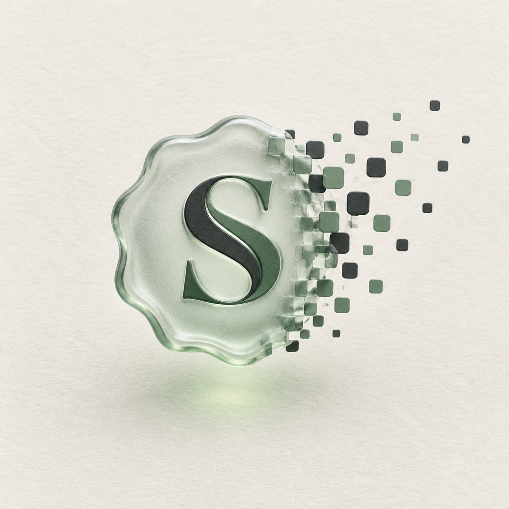
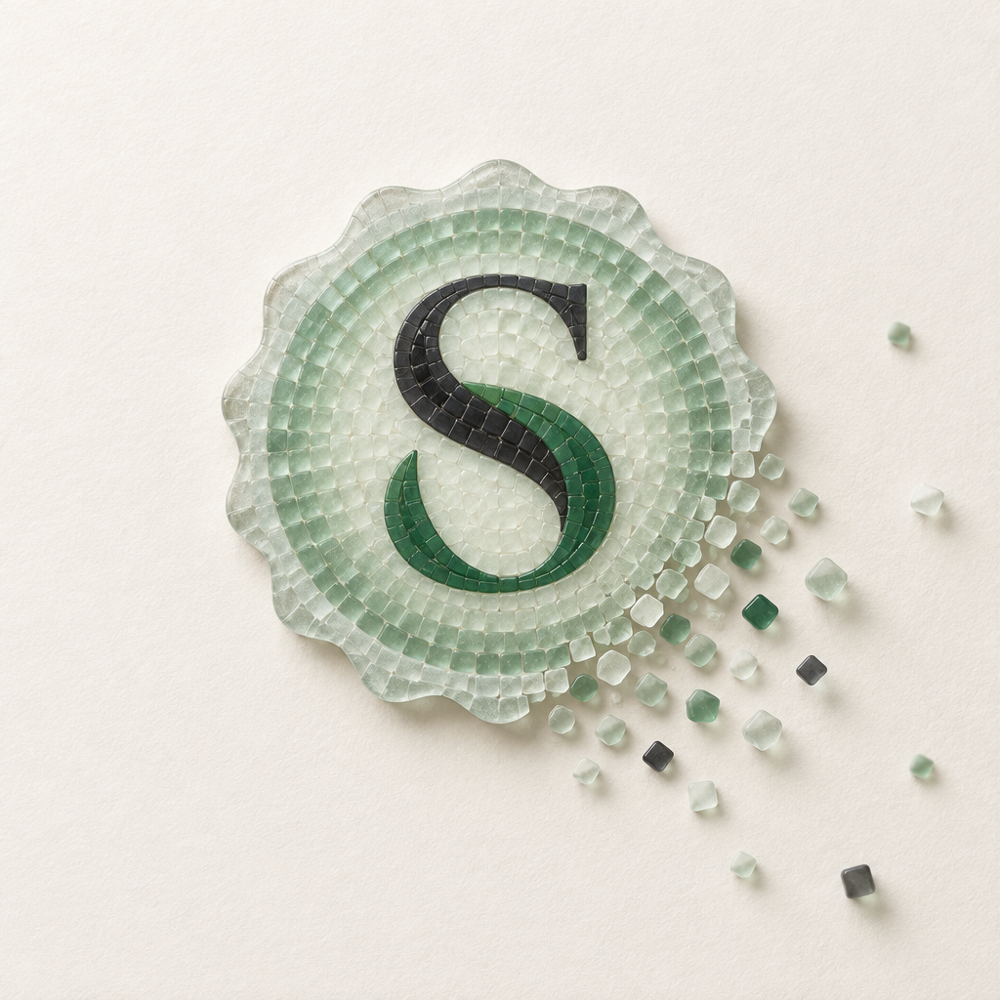
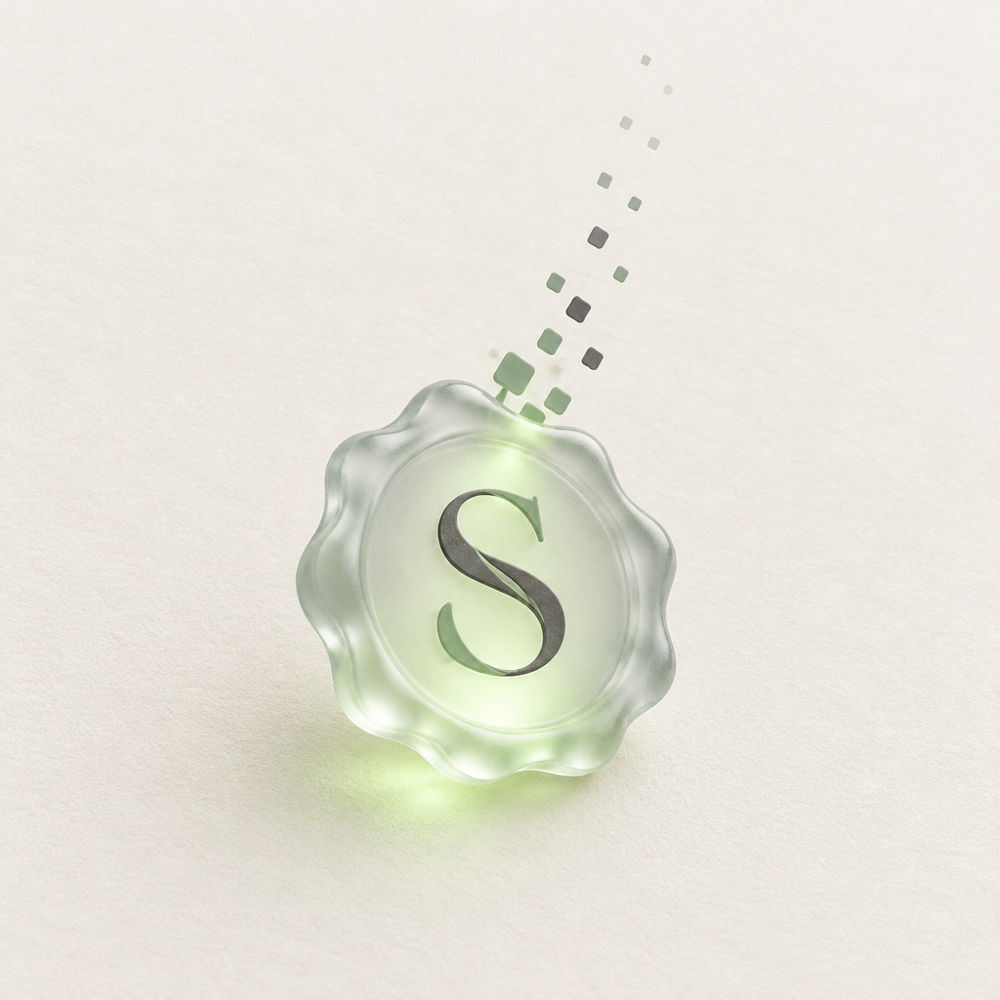

B and C combined: the frosted glass seal with the lit S, and the dissolve into seal-tiles. Three ways to stage the dissolve.

Solid glass on the left, the right edge breaking into charcoal and sage tiles that drift away. The S stays whole and the two-tone strokes survived. Most legible, most logo-able, and the tiles are the same tiles we use in the app.

The whole seal is built from glass tiles that loosen at one corner. Beautiful, tactile, very craft. Reads as "made of many small sealed things". But it looks like a mosaic artwork more than a brand mark, and it will not survive small sizes.

Intact seal, a quiet plume of tiles rising from the top. Most restrained. The S came out single-tone and the render leans cute. Good as a loading or "sending" moment, less as the main mark.